<mat-toolbar color="primary">
	<div
		class="d-flex flex-row align-items-center"
		role="button"
		[routerLink]="''"
	>
		
		<h1>Zraszacze 2.0</h1>
	</div>
	<a mat-button [routerLink]="''" style="margin-left: 20px">Profile</a>
	<a mat-button [routerLink]="'/settings'">Ustawienia</a>
</mat-toolbar>

<div class="d-flex justify-content-center">
	<div class="mt-3 w-100 px-1 px-md-3" style="max-width: 992px">
		<router-outlet></router-outlet>
	</div>
</div>
